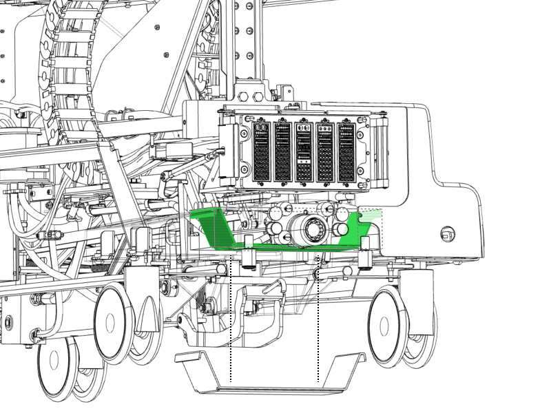

Object ID: 00000018WIA3010B350GYZTopic ID: id_2020833 Version: 2.2Date: Sep 12, 2023, 7:37:07 PMRemoving the hydraulic rotary pump drip pan Removes the rotary pump oil drip pan from the dockable patient table. ProcedureLift one side of the drip pan and gently push it inwards to flex the bottom of the pan.While pushing the side of the pan inward, push the pan down between the rails, and slide the pan out from under the table. Figure 1. Hydraulic rotary pump oil drip pan